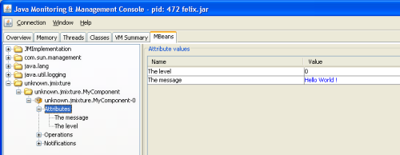
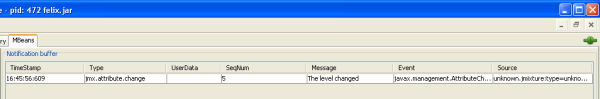

iPOJO JMX Handler
This handler provides JMX management of component instance. It could be useful to manage instance remotely. As the handler exposes MBeans, you must have a MBean server running on your platform (as the platform MBean server or the MOSGi MBean Server).
Features
The handler allows to:
- Expose attributes accessible via JMX (with right management).
- Expose methods to be called through JMX.
- Get notifications when attributes are modified .
Prerequisites
To be functional this handler must register on an MBean Server,thus you obviously need it. Several servers are currently supported : the standard platform MBean server (included in the JDK), MOSGi (provided with Felix), ...
To use MOSGi, you have to deploy at least the following three bundles of MOSGi:
- org.apache.felix.mosgi.jmx.agent
- org.apache.felix.mosgi.jmx.registry
- org.apache.felix.mosgi.jmx.rmiconnector
You can find MOSGi documentation on http://cwiki.apache.org/FELIX/mosgi-managed-osgi-framework.html
Download
The JMX handler is available in the Felix trunk in the iPOJO project. See the Download page to download and compile these sources.
How to use it
The handler needs to be added in the metadata.xml, you just add a namespace (e.g., jmx) :
<ipojo xmlns:jmx="org.apache.felix.ipojo.handlers.jmx"> ... </ipojo>
So, you could now expose in JMX properties and methods of your component. They are surrounded by the <jmx:config>
tag.
<jmx:config> <jmx:property name="message" field="m_msg" rights="w" notification="true"/> <jmx:method name="doSomethingBad"/> <jmx:method name="doSomethingGood"/> </jmx:config>
| Serialization Be careful that the argument and return type of methods must be serializable. In case of several methods have the same name, each of them will be exposed. |
JMX Handler options
Here you can find all configuration options of the JMX handler. There are two kinds of manageable elements : properties and methods. First is described the global configuration of the handler. Then elements can be configured, using several attributes, as described below.
Global handler attributes
| Attribute name | Required | Description |
|---|---|---|
| objectName | NO | The complete object name of the managed component. The syntax of this attribute must be compliant with the ObjectName syntax, detailed in the JMX specification. If neither domain nor name attributes are specified, the default value is determined by the package, the type and the instance name of the component. This attribute overrides the domain and name attributes. Example: "my.domain:type=myType,name=myName" |
| domain | NO | The domain of the managed object (i.e., the left part of the object name). This attribute must be compliant with the domain syntax, as described in the JMX specification. Example: "my.domain" |
| name | NO | The name property of the managed object. The value of this attribute must comply with the ObjectName value syntax, as described in the JMX specification. |
| usesMOSGi | NO | Determines if the component must be register on the MOSGi MBean server or not. |
| preRegister postRegister preDeregister postDeregister |
NO | These attributes allow to specify methods to carry out operations before and after being registered or unregistered from the MBean server. |
Properties attributes
| Attribute name | Required | Description |
|---|---|---|
| field | YES | The name of the component's field to expose. |
| name | NO | The name of the property as it will appear in JMX. If unspecified, the default value is the name of the exposed field. |
| rights | NO | Specify the access permission of the exposed field. The accepted values are :
|
| notification | NO | Enable or disable attribute change notification sending for this property. If set to "true", a notification is sent each time the value of the field changes. |
Methods attributes
| Attribute name | Required | Description |
|---|---|---|
| name | YES | The name of the method to expose. If multiple methods have the same name, all of them are exposed. |
| description | NO | The description of the exposed method, as it will appear in JMX. |
Examples
In this part, we will give you a complete example of a component managed with JMX, using the JConsole provided by the SUN JDK.
Exposing Attributes
In first time we create a simple component named MyComponent. We have add two fields named m_level (int) and m_message (String).
public class MyComponent ... { // Exposed attributes private String m_message; private int m_level; }
We expose now the attributes in the jmx:config
tag in the metadata :
<?xml version="1.0" encoding="UTF-8"?> <iPOJO xmlns:jmx="org.apache.felix.ipojo.handlers.jmx"> <component className="...MyComponent" architecture="true" immediate="true"> <provides/> <jmx:config> <!-- Exposed properties --> <jmx:property field="m_level" name="The level" rights="r"/> <jmx:property field="m_message" name="The message" rights="w"/> </jmx:config> </component> <instance component="...MyComponent"/> </iPOJO>
Now, we could get and write the properties in the JConsole :

Exposing Methods
We could now add methods in the initial class :
/** Do something good */ public void doSomethingGood() { ... } /** Do something bad */ public void doSomethingBad() { ... } /** Do nothing */ public void doNothing() { ... }
We add corresponding tags in the metadata to expose these methods:
<!-- Exposed methods --> <jmx:method name="doSomethingGood" description="Do something good."/> <jmx:method name="doSomethingBad" description="Do something bad."/> <jmx:method name="doNothing" description="Do absolutely nothing."/>
Now the three methods are exposed in the operations tab of the JConsole. We can invoked these methods :

Attribute Notifications:
You could subscribe to attribute notification by adding the notification attribute in property tag. In our example if we want to be notified when m_level is modified, we change the property line in the metatada like this:
<jmx:property field="m_level" name="The level" rights="r" notification="true"/>
So now if we change the string through JConsole (or in the VisualVM) or if the POJO is modified in other way, a notification will be sent to every listener. For example, we subscribe in the notification tab, and we get notification when the message changes :

Configuring the handler with annotations
It is possible to configure the handler with simple annotations available with iPOJO annotations. Here is an example of usage:
import org.apache.felix.ipojo.annotations.Component; import org.apache.felix.ipojo.handlers.jmx.Config; import org.apache.felix.ipojo.handlers.jmx.Method; import org.apache.felix.ipojo.handlers.jmx.Property; @Component @Config(domain="my-domain", usesMOSGi=false) public class JMXSimple { @Property(name="prop", notification=true, rights="w") // Field published in the MBean String m_foo; @Method(description="set the foo prop") // Method published in the MBean public void setFoo(String mes) { System.out.println("Set foo to " + mes); m_foo = mes; } @Method(description="get the foo prop") // Method published in the MBean public String getFoo() { return m_foo; } }
The @org.apache.felix.ipojo.handlers.jmx.Config (@Config if the package it correctly imported) annotation is a type annotation (so placed on the class element. This annotation indicates that the instance will be exposed as an MBean. This annotation supports:
- usesMOSGi: set to true to use MOSGi. Otherwise, the MBean will be exposed in the MBean Platform Server (default: false).
- objectname: set the MBean objectname. The objectname must follow JMX specification. (default: package-name:factory-name:instance-name)
- domain: set the MBean domain. (default: package-name)
- name: set the MBean name. (default: instance-name).
The @org.apache.felix.ipojo.handlers.jmx.Property (@Property) annotation is a field annotation indicating that the field is exposed in the MBean. The supported attributes are:
- name: set the property name
- rights: set the access permission. Possible values are r (read only) and w (read and write). By default, properties are in read-only mode.
- notification: enables notification on this property. By default notifications are disabled.
The @org.apache.felix.ipojo.handlers.jmx.Method (@Method) annotation is a method annotation indicating that the method is exposed in the MBean. Only one attribute can be customized:
- description: set the method description.